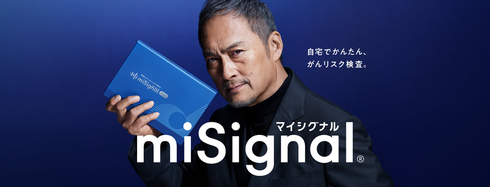
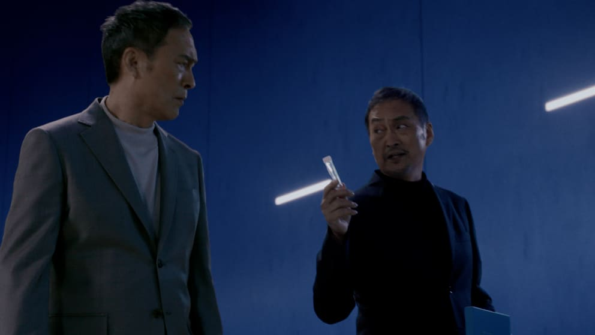
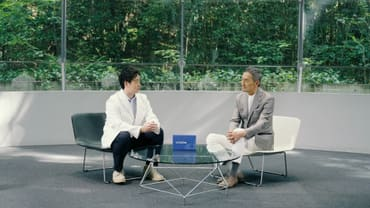
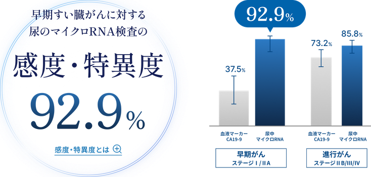
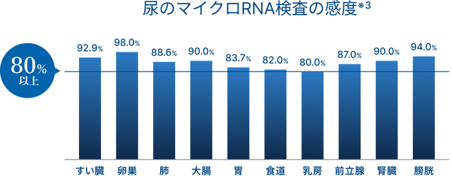
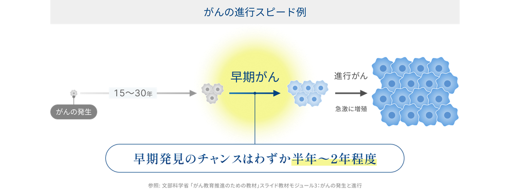
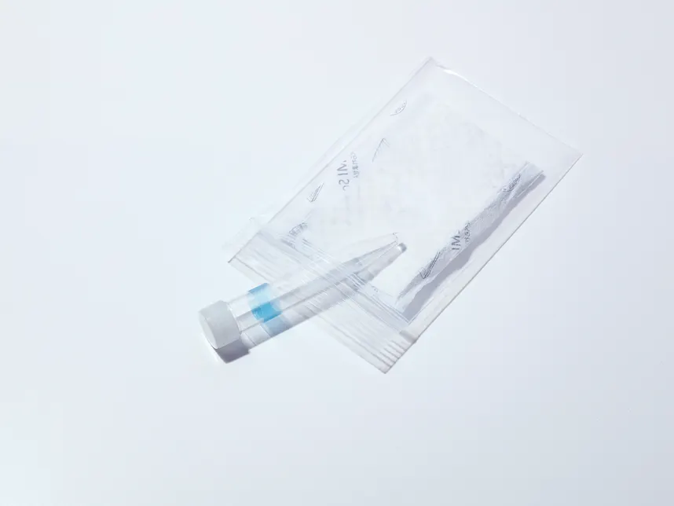

※尿×AI×マイクロRNAを用いたがんリスク検査サービスとして（第三者機関調査）
「ふたりの自分」篇
渡辺謙さんが一人二役を熱演。「検査を受ける自分」「受けていない自分」の対話を通じてマイシグナルの魅力を伝えます。



マイシグナルがきっかけで
がんを早期発見


肺がん
ステージ0
60代 | 女性 | 北海道
たった4mmのがんを超早期発見
胃がん
ステージ1
70代 | 女性 | 北海道
内視鏡で治療可能な早期の状態
前立腺がん
ステージ2a
70代 | 男性 | 千葉
早期発見で、仕事を休まず治療できた
大腸がん
前がん病変
70代 | 女性 | 大阪
検査が苦手な人にこそ使って欲しい
1度に10種＊の
がんリスクをまとめて検査
＊女性は前立腺がんを除く9種、男性は乳がん・卵巣がんを除く8種が検査対象となります。

10/12まで
マイシグナルとは？
尿の「マイクロRNA」を調べ、
がんリスクを「ステージ1」から
調べられる検査です
マイクロRNAは遺伝子の働きを調整する物質。がん細胞の影響で特有の発現パターンを示すことが報告されており、がんの早期発見の重要な「カギ」になります。
検査の仕組みをくわしく見る早期発見が難しいすい臓がんに対する
優れた検出性能が確認されています
尿中マイクロRNAと血液マーカーCA19-9のすい臓がん検出感度※1,2


※1 本研究成果はLancetの姉妹紙に掲載されました。eClinicalMedicine 2024: 78: 102936. ※2 感度と特異度のバランスが最も良いしきい値を設定した場合の数値。すい臓がん全体での感度は88.2% ※3 各がん種の感度は、個別の研究報告に基づいています。すい臓がん及び胃がんは早期ステージの感度、その他のがん種は全ステージの感度を示しています。
充実のアフターサポート
「検査したら終わり」ではありません。
結果の見方から次のステップまで、あなたに寄り添うサポート体制を整えています。
結果表の見方について
解説してほしい
「マイシグナルカスタマーサポート」では、結果表の見方など、あなたの疑問やご不安を丁寧にサポートします。

追加検査はどの病院に
行けばいいの？
追加検査が可能な医療機関に関する情報提供を行っています。専用ページからお近くの病院を探すことができます。

がんの早期発見によるメリット
早期発見の効果は大きく、
身体的にも費用面でも、大きな差があります。
5年相対生存率
92.4%
入院日数の差
約60日
治療費の削減効果
約300万円
一方で、検査で発見可能な早期がんの期間は短く
がんによっては半年〜2年程度と言われています。

定期的な検査で
早期発見のタイミングを逃さないことが重要です
医療機関の声

加藤 容崇先生
慶應義塾大学 医学部腫瘍センターがんゲノム医療ユニット 特任助教
すい臓がんの早期発見に新たな可能性
すい臓がんは進行すると有効な治療法が限られるため、早期段階での発見が重要です。しかし、早期発見は依然として難しいのが現状です。尿中マイクロRNA検査は、こうした課題に応える新たなアプローチとなり得ると考えます。

夏目敦至先生
名古屋大学 特任教授
早期がん治療に一石を投じる検査です
がんの早期発見によって、がんの治癒率が改善されてきました。医療機関受検をためらう方、身内ががん患者だから自分も心配という方にとって、自宅でがんリスク検査ができることは、有用な選択肢となる可能性を秘めています。


マイシグナル・スキャン
尿を送っていただくだけで、すい臓がんなど10種※のがんリスクを、がん種別にステージ1から調べられる検査キットです。わかりやすい結果報告書がお手元に届きます。
検査対象 すい臓がん / 肺がん / 胃がん / 大腸がん / 食道がん / 腎臓がん / 膀胱がん / 卵巣がん / 乳がん / 前立腺がん ※女性は前立腺がんを除く9種、男性は乳がん・卵巣がんを除く8種が検査対象となります。
検査の流れ

検体の採取・送付

尿を採取し、案内に従って送付します。
日本全国、ご自宅に集荷に伺います。 ※一部離島を除く
結果の確認

1ヶ月以内に、ご自宅に結果報告書が届きます。
マイページからも手軽に確認できます。
取扱店舗・ 医療機関はこちら


受賞歴・メディア掲載実績


マイシグナル® 3つのお約束
1
お客さまの「その後」
まで考えつづけます
お客さまを大切にする検査とは何か。私たちは受検後のお客さまを迷わせない検査設計をしています。また安心して受検いただけるようアフターフォロー体制を整備。がん対策は継続していくものだから。終わりにしない関係を築けるよう努力をつづけています。
2
検査品質にこだわり、
追求の手を止めません
マイシグナル®ラボは、愛知県知事登録を受けた衛生検査所※を併設し、厳格な検査水準で検査品質を保っています。最新の機器を導入し、自動化が進んだラボでは効率的・安定的な検査を実現。検査品質に一切の妥協を許しません。
※ 生化学的検査（免疫化学検査）、遺伝子関連・染色体検査（体細胞遺伝子検査）
3
がんリスク検査を
リードする研究開発を
AIなど新たな技術を活用するマイシグナル®のチームには国内外から志を一にしたすぐれた人材が集まっています。これからも進化し続けるために、研究へ投資し、この業界をリードしていく力を高め続けます。